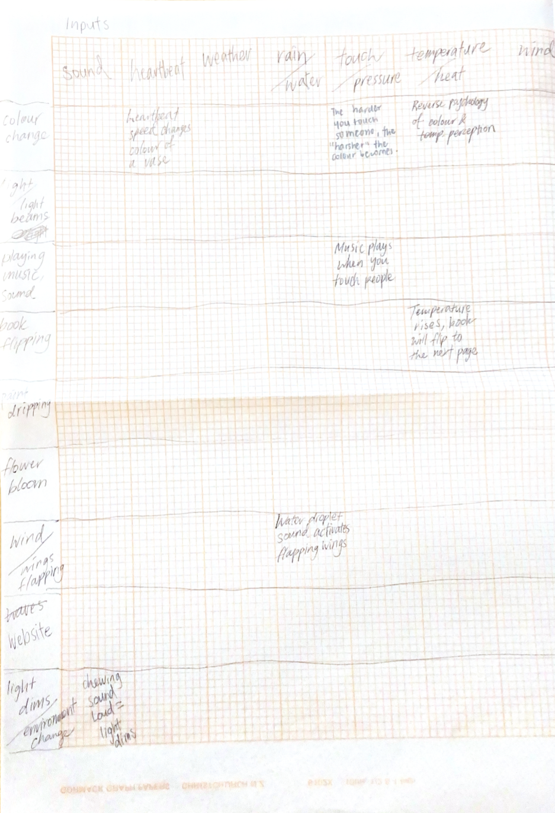
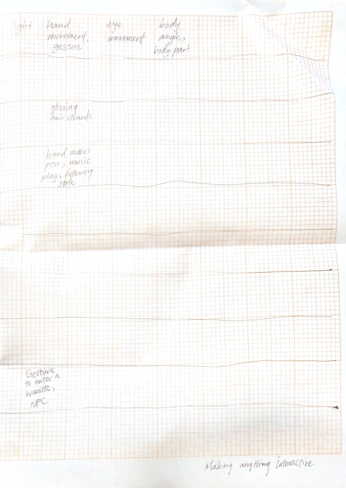

This was a great exercise that prompted extensive thinking on the interactivity. I tried coming up with as much input/output forms as possible, then generating ideas and making them tie together based on the combination. I enjoyed this approach and will definitive adoptive this method in future creative thinking tasks.
Some interesting combinations I had:
- taking inspo from the touch salad exercise, what if human hair is used to produce music?
- hand makes a pose, music plays following the style being interpreted
- heartbeat speed changes the projected color of a vase
I also swapped my I/Os with a couple of classmates, where they picked a cell and wrote what they think could be a possible interactive project. This exchange created great value in the range of ideas we came up with. Overall, although I wasn't able to get through all of the cells, this prompted further exploratory into new possibilities for my final project.

